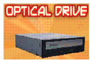

 An Optical Drive is a disk drive that uses laser light or electromagnetic waves within or near the visible light spectrum as part of the process of reading or writing data to or from optical discs.
Return to Home